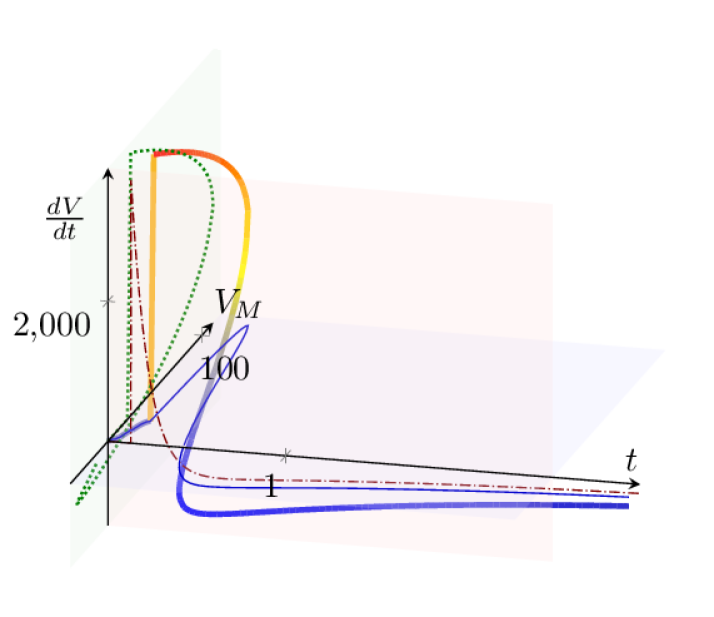

In the resting state, we have a condenser that has some low-conductance resistors (the resting ion channels) and a very low intensity (nearly constant) distributed current flows, under the effect of a slightly varying (nearly constant) membrane voltage. Due to the membrane potential, a current through the always-open channels flows on the dendritic surface and the resting channels’ conductivity represents a drain with sufficient transmission. The resting current practically does not reach the AIS: the ion channels along the current’s path practically ”shunt” the current. This is a static state that classical neuroscience assumes: some static current in and some static (leakage) current out; no significant gradient. In this state, an almost correct model is a condenser with a parallelly switched resistor; an integrator-type circuit, see Table 6.2 (although when approaching the threshold voltage, the AIS plays some role. The smaller gradient changes, such as subthreshold excitations, produce ”mini-AP waves” [55], providing direct experimental proof that in this state the parallel circuit is not correct). Some perturbations must be counterbalanced, but their amount does not exceed a predefined threshold.
In the transient (perturbed) state, the process variable (the membrane’s potential) exceeds the threshold. That event acts as a fast trigger signal. The amount of charged particles (and so: the membrane’s voltage) suddenly increases, the created gradient drives a current. When ions rush into the intracellular layer, they roughly increase the overall concentration and the potential in that thin layer. All nearby ions feel a driving force. The targeted membrane potential is set electrically, and the driving gradients may behave in unexpectedly during the transient period. The actual voltage gradient may temporarily reverse the direction of the chemical gradients.
Our results align with the observation (see caption of 11.22 in [42]), that the significant processes occur in a thin layer of the electrolyte proximal to the membrane surface. The amount of unbalanced ions is in the range of , and so is the amount of rush-in ions. In addition, those ions on the high-concentration side rush into the low-concentration side and cause a significant change in the membrane potential (and concentration). Their absolute amount is small compared to the total number of ions in the cell, but it is significant compared to the number of unbalanced ions in that layer. However, the layer itself can also be modeled as having just a few ions under their mutual repulsion on the surface or in a few atomic layers on top of each other, depending on the concentration.
Suppose that at the beginning of an AP a large amount of ions are transferred from the extracellular to the intracellular side. In that case, the concentrations change from to and the corresponding thermodynamic voltage contribution changes from to (i.e., altogether a sudden increase in membrane potential). For the ions, the resultant potential changes from to . That means when the AP begins, the ”Na-K pump” stops (if the resulting potential provides the driving force for the exchange pump). The only way for the neuron to remove the excess ions is to generate a current toward the AIS (where the other end of the ion channels remained at the extracellular potential), until the -specific driving force disappears. The -specific driving force, changes from to , i.e., the intake gets more intensive, misleading researchers into believing that it causes the observed hyperpolarization. However, as Fig. 3 in [55] demonstrates, it occurs instantly, not with a delay; furthermore, the ”leakage current” and the stimulus current are negligible. The low extracellular concentration plus the low number of channels in the membrane’s wall do not enable a significant increase in the intracellular . (Given that complex changes occur, including changes in the electrical potential that also change the concentrations, different waves start; the statement is not strictly valid.)
As the current flows, the thermodynamic force decreases, and at some point the resultant force changes its sign; so does the current direction. This is seen as the ”condenser current” (and mis-identified as an intense current). The ions move slowly, and due to the enormous electrostatic repulsion, their ”electrostatic fluid” must be continuous. A special ”damped wave” is formed (with all secondary mechanical, optical, etc. effects) and the condenser current reverses. Electricity interprets the phenomenon as ”capacitive current” in the equivalent circuit, and thermodynamics interprets it as changed chemical concentration (or the negative amplitude of the damped elastic oscillation). Our discussion adds that electrical repulsion generates a pressure wave, or shock wave, within the neuron’s closed volume.
